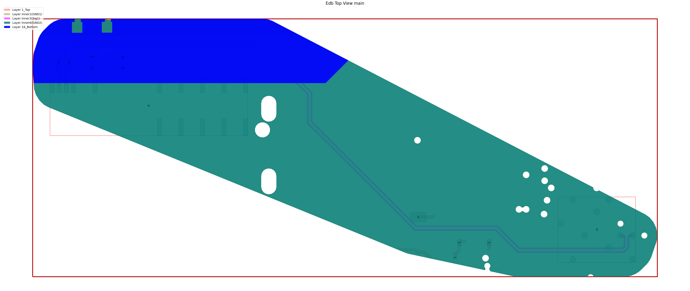

Download this example
Download this example as a Jupyter Notebook or as a Python script.
Import Ports#
This example shows how to import operations. In this example, we are going to
Download an example board
Create a configuration file
Add a cutout operation
Import the configuration file
Import the required packages#
[1]:
import json
import tempfile
import time
from pathlib import Path
import toml
from ansys.aedt.core.examples.downloads import download_file
from pyedb import Edb
AEDT_VERSION = "2025.2"
NG_MODE = False
Download the example PCB data.
[2]:
temp_folder = tempfile.TemporaryDirectory(suffix=".ansys")
file_edb = download_file(source="pyaedt/edb/ANSYS-HSD_V1.aedb", local_path=temp_folder.name)
Load example layout and place ports#
[3]:
edbapp = Edb(edbpath=file_edb, version=AEDT_VERSION)
ports = [
{"name": "Port_U1_P", "reference_designator": "U1", "positive_terminal": {"net": "PCIe_Gen4_TX3_CAP_P"}, "negative_terminal": {"net": "GND"}, "type": "circuit"},
{"name": "Port_U1_N", "reference_designator": "U1", "positive_terminal": {"net": "PCIe_Gen4_TX3_CAP_N"}, "negative_terminal": {"net": "GND"}, "type": "circuit"},
{"name": "Port_X1_P", "reference_designator": "X1", "positive_terminal": {"net": "PCIe_Gen4_TX3_P"}, "negative_terminal": {"net": "GND"}, "type": "circuit"},
{"name": "Port_X1_N", "reference_designator": "X1", "positive_terminal": {"net": "PCIe_Gen4_TX3_N"}, "negative_terminal": {"net": "GND"}, "type": "circuit"},
]
cfg_1 = {"ports": ports}
PyEDB INFO: Star initializing Edb 05:37:55.392398
PyEDB INFO: Edb version 2025.2
PyEDB INFO: Logger is initialized. Log file is saved to C:\Users\ansys\AppData\Local\Temp\pyedb_ansys.log.
PyEDB INFO: legacy v0.71.0
PyEDB INFO: Python version 3.10.11 (tags/v3.10.11:7d4cc5a, Apr 5 2023, 00:38:17) [MSC v.1929 64 bit (AMD64)]
PyEDB INFO: Database ANSYS-HSD_V1.aedb Opened in 2025.2
PyEDB INFO: Cell main Opened
PyEDB INFO: Builder was initialized.
PyEDB INFO: open_edb completed in 9.0264 seconds.
PyEDB INFO: EDB initialization completed in 9.1064 seconds.
[4]:
edbapp.configuration.load(cfg_1)
edbapp.configuration.run()
edbapp.save()
edb_path = edbapp.edbpath
edbapp.close()
PyEDB INFO: Updating nets finished. Time lapse 0:00:00
PyEDB INFO: Updating components finished. Time lapse 0:00:00
PyEDB INFO: Creating pin groups finished. Time lapse 0:00:00
PyEDB INFO: Placing sources finished. Time lapse 0:00:00
PyEDB INFO: Applying materials finished. Time lapse 0:00:00
PyEDB INFO: Updating stackup finished. Time lapse 0:00:00
PyEDB INFO: Applying padstack definitions and instances completed in 0.0317 seconds.
PyEDB INFO: Applying S-parameters finished. Time lapse 0:00:00
PyEDB INFO: Applying package definitions finished. Time lapse 0:00:00
PyEDB INFO: Applying modeler finished. Time lapse 0:00:00
PyEDB INFO: Placing ports finished. Time lapse 0:00:01.564701
PyEDB INFO: Placing terminals completed in 0.0000 seconds.
PyEDB INFO: Placing probes finished. Time lapse 0:00:00
PyEDB INFO: Applying operations completed in 0.0000 seconds.
PyEDB INFO: Applying setups completed in 0.0000 seconds.
PyEDB INFO: Save Edb file completed in 0.1111 seconds.
PyEDB INFO: Close Edb file completed in 0.0950 seconds.
[4]:
True
Cutout by nets#
Keywords
reference_list. List of reference nets.
Extent_type. Supported types are
Conforming,ConvexHull, andBounding.signal_list. List of signal nets to keep.
expansion_size. Expansion size ratio in meters. The default is
0.002.use_round_corner. Whether to use round corners. Defaults to
False.number_of_threads. Number of threads to use. Defaults to
4.extent_defeature. Simplifies geometry before applying cutout to aid meshing. Only applies to Conforming bounding box. Defaults to
0(disabled).remove_single_pin_components. Removes all single-pin RLCs after cutout. Defaults to
False.custom_extent. List of points defining the custom cutout shape. Overrides the
extent_typesetting.custom_extent_units. Units of the custom extent points. Defaults to
"mm". Only valid ifcustom_extentis provided.include_partial_instances. Includes padstacks with bounding boxes intersecting the custom shape. May slow down export. Only valid with
custom_extentanduse_pyaedt_cutout.keep_voids. Whether to keep voids intersecting the cutout polygon. Defaults to
True. Valid only ifcustom_extentis provided.check_terminals. Expands extent to include reference terminals of components with associated models.
include_pingroups. Includes terminals of pingroups. Requires
check_terminalsto beTrue.expansion_factor. Computes the maximum between dielectric thickness and trace width (for nets with ports) multiplied by this factor. Defaults to
0(disabled). Works only withuse_pyaedt_cutout.maximum_iterations. Maximum number of iterations allowed for cutout search. Defaults to
10.preserve_components_with_model. Preserves all pins of components with associated models (Spice or NPort). Only applicable for PyAEDT cutouts (excluding point list).
simple_pad_check. Uses pad center for intersection detection instead of bounding box. Defaults to
True. Bounding box method is slower and disables multithreading.keep_lines_as_path. Keeps lines as
Pathinstead of converting toPolygonData. Only works in Electronics Desktop (3D Layout). May cause issues in SiWave. Defaults toFalse.include_voids_in_extents. Includes voids in the computed extent (for Conforming only). May affect performance. Defaults to
False.
[5]:
cutout = {"reference_list": ["GND"], "extent_type": "ConvexHull", "signal_list": ["PCIe_Gen4_TX3_CAP_P", "PCIe_Gen4_TX3_CAP_N", "PCIe_Gen4_TX3_P", "PCIe_Gen4_TX3_N"]}
operations = {"cutout": cutout}
cfg = {"operations": operations}
Write configuration into as json file
[6]:
file_json = Path(temp_folder.name) / "cutout_1.json"
with open(file_json, "w") as f:
json.dump(cfg, f, indent=4, ensure_ascii=False)
Equivalent toml file looks like below
[7]:
toml_string = toml.dumps(cfg)
print(toml_string)
[operations.cutout]
reference_list = [ "GND",]
extent_type = "ConvexHull"
signal_list = [ "PCIe_Gen4_TX3_CAP_P", "PCIe_Gen4_TX3_CAP_N", "PCIe_Gen4_TX3_P", "PCIe_Gen4_TX3_N",]
Apply cutout
[8]:
edbapp = Edb(edbpath=edb_path, version=AEDT_VERSION)
edbapp.configuration.load(config_file=file_json)
edbapp.configuration.run()
edbapp.nets.plot()
edbapp.close()
PyEDB INFO: Star initializing Edb 05:38:06.450536
PyEDB INFO: Edb version 2025.2
PyEDB INFO: Logger is initialized. Log file is saved to C:\Users\ansys\AppData\Local\Temp\pyedb_ansys.log.
PyEDB INFO: legacy v0.71.0
PyEDB INFO: Python version 3.10.11 (tags/v3.10.11:7d4cc5a, Apr 5 2023, 00:38:17) [MSC v.1929 64 bit (AMD64)]
PyEDB INFO: Database ANSYS-HSD_V1.aedb Opened in 2025.2
PyEDB INFO: Cell main Opened
PyEDB INFO: Builder was initialized.
PyEDB INFO: open_edb completed in 0.3839 seconds.
PyEDB INFO: EDB initialization completed in 0.3919 seconds.
PyEDB INFO: Updating nets finished. Time lapse 0:00:00
PyEDB INFO: Updating components finished. Time lapse 0:00:00
PyEDB INFO: Creating pin groups finished. Time lapse 0:00:00
PyEDB INFO: Placing sources finished. Time lapse 0:00:00
PyEDB INFO: Applying materials finished. Time lapse 0:00:00
PyEDB INFO: Updating stackup finished. Time lapse 0:00:00
PyEDB INFO: Applying padstack definitions and instances completed in 0.0317 seconds.
PyEDB INFO: Applying S-parameters finished. Time lapse 0:00:00
PyEDB INFO: Applying package definitions finished. Time lapse 0:00:00
PyEDB INFO: Applying modeler finished. Time lapse 0:00:00
PyEDB INFO: Placing ports finished. Time lapse 0:00:00
PyEDB INFO: Placing terminals completed in 0.0000 seconds.
PyEDB INFO: Placing probes finished. Time lapse 0:00:00
PyEDB INFO: -----------------------------------------
PyEDB INFO: Trying cutout with (0.002)*(1000.0)mm expansion size
PyEDB INFO: -----------------------------------------
PyEDB INFO: Cutout Multithread started.
PyEDB INFO: Net clean up Elapsed time: 0m 1sec
PyEDB INFO: Extent Creation Elapsed time: 0m 0sec
PyEDB INFO: 1982 Padstack Instances deleted. Elapsed time: 0m 1sec
PyEDB INFO: 443 Primitives deleted. Elapsed time: 0m 3sec
PyEDB INFO: 984 components deleted
PyEDB INFO: Cutout completed. Elapsed time: 0m 5sec
PyEDB INFO: EDB file save completed in 0.0631 seconds.
PyEDB INFO: Cutout completed in 1 iterations with expansion size of (0.002)*(1000.0)mm Elapsed time: 0m 5sec
PyEDB INFO: Applying operations completed in 4.8630 seconds.
PyEDB INFO: Applying setups completed in 0.0000 seconds.

PyEDB INFO: Plot Generation time 0.836
PyEDB INFO: Close Edb file completed in 0.0999 seconds.
[8]:
True
Cutout with auto net identification#
Keywords
auto_identify_nets. Identify nets connected to ports
enabled. Resistance threshold. Resistor with value below this threshold is considered as short circuit
resistor_below. Resistance threshold. Resistor with value below this threshold is considered as short circuit
inductor_below. Inductor threshold. Inductor with value below this threshold is considered as short circuit
capacitor_above. Capacitor threshold. Capacitor with value below this threshold is considered as short circuit
[9]:
cutout = {"auto_identify_nets": {"enabled": True, "resistor_below": 100, "inductor_below": 1, "capacitor_above": 1}, "reference_list": ["GND"], "extent_type": "ConvexHull"}
operations = {"cutout": cutout}
cfg = {"operations": operations}
Write configuration into as json file
[10]:
file_json = Path(temp_folder.name) / "cutout_2.json"
with open(file_json, "w") as f:
json.dump(cfg, f, indent=4, ensure_ascii=False)
Equivalent toml file looks like below
[11]:
toml_string = toml.dumps(cfg)
print(toml_string)
[operations.cutout]
reference_list = [ "GND",]
extent_type = "ConvexHull"
[operations.cutout.auto_identify_nets]
enabled = true
resistor_below = 100
inductor_below = 1
capacitor_above = 1
Apply cutout
[12]:
edbapp = Edb(edbpath=edb_path, version=AEDT_VERSION)
edbapp.configuration.load(config_file=file_json)
edbapp.configuration.run()
edbapp.nets.plot()
edbapp.close()
PyEDB INFO: Star initializing Edb 05:38:12.813377
PyEDB INFO: Edb version 2025.2
PyEDB INFO: Logger is initialized. Log file is saved to C:\Users\ansys\AppData\Local\Temp\pyedb_ansys.log.
PyEDB INFO: legacy v0.71.0
PyEDB INFO: Python version 3.10.11 (tags/v3.10.11:7d4cc5a, Apr 5 2023, 00:38:17) [MSC v.1929 64 bit (AMD64)]
PyEDB INFO: Database ANSYS-HSD_V1.aedb Opened in 2025.2
PyEDB INFO: Cell main Opened
PyEDB INFO: Builder was initialized.
PyEDB INFO: open_edb completed in 0.0948 seconds.
PyEDB INFO: EDB initialization completed in 0.0948 seconds.
PyEDB INFO: Updating nets finished. Time lapse 0:00:00
PyEDB INFO: Updating components finished. Time lapse 0:00:00
PyEDB INFO: Creating pin groups finished. Time lapse 0:00:00
PyEDB INFO: Placing sources finished. Time lapse 0:00:00
PyEDB INFO: Applying materials finished. Time lapse 0:00:00
PyEDB INFO: Updating stackup finished. Time lapse 0:00:00
PyEDB INFO: Applying padstack definitions and instances completed in 0.0157 seconds.
PyEDB INFO: Applying S-parameters finished. Time lapse 0:00:00
PyEDB INFO: Applying package definitions finished. Time lapse 0:00:00
PyEDB INFO: Applying modeler finished. Time lapse 0:00:00
PyEDB INFO: Placing ports finished. Time lapse 0:00:00
PyEDB INFO: Placing terminals completed in 0.0000 seconds.
PyEDB INFO: Placing probes finished. Time lapse 0:00:00
PyEDB INFO: -----------------------------------------
PyEDB INFO: Trying cutout with (0.002)*(1000.0)mm expansion size
PyEDB INFO: -----------------------------------------
PyEDB INFO: Cutout Multithread started.
PyEDB INFO: Net clean up Elapsed time: 0m 0sec
PyEDB INFO: Extent Creation Elapsed time: 0m 0sec
PyEDB INFO: 0 Padstack Instances deleted. Elapsed time: 0m 0sec
PyEDB INFO: 6 Primitives deleted. Elapsed time: 0m 0sec
PyEDB INFO: 0 components deleted
PyEDB INFO: Cutout completed. Elapsed time: 0m 0sec
PyEDB INFO: EDB file save completed in 0.0477 seconds.
PyEDB INFO: Cutout completed in 1 iterations with expansion size of (0.002)*(1000.0)mm Elapsed time: 0m 0sec
PyEDB INFO: Applying operations completed in 0.2695 seconds.
PyEDB INFO: Applying setups completed in 0.0000 seconds.

PyEDB INFO: Plot Generation time 0.808
PyEDB INFO: Close Edb file completed in 0.0281 seconds.
[12]:
True
[13]:
# Wait 3 seconds before cleaning the temporary directory.
time.sleep(3)
Clean up#
All project files are saved in the folder temp_folder.name. If you’ve run this example as a Jupyter notebook, you can retrieve those project files. The following cell removes all temporary files, including the project folder.
[14]:
temp_folder.cleanup()
Download this example
Download this example as a Jupyter Notebook or as a Python script.